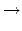

Latin America - South America - 2005/2006
| 3475 - P-Networks Latin America - South America - 2005/2006 | ||||
| Submit | Ranking | ||||
Pretty Networks Inc. is a company that builds some curious artifacts whose purpose is to transform a set of input values in a given way. The transformation is determined by what they call a p-network. The following picture shows an example of a p-network.
In the general case, a p-network of order N
The transformation determined by a p-network can be explained using a set of rules that govern the way a p-network should be traversed:
If starting at wire i
Pretty Networks Inc. hired you to solve the following p-network design problem: given a number N
When there exists a solution with a certain size, in many cases there is another solution with a greater size. Scientists at Pretty Networks Inc. have stated that if there exists a solution for a p-network design problem, then there is a solution with size less than 4N2
The input has a certain number of p-network design problems. Each problem is described in just one line that contains the values
N, i1, i2,..., iN
For each p-network design problem in the input, the output must contain a single line. If the problem has no solution the line must be `No solution'. Otherwise the line must contain a description of any p-network (with N
{1  3, 2 5, 3 4, 4 1, 5 2}.
Input
 N
N 20)
20)
 ij
ij N
N
 j
j N
N
Output
 i
i M
M
 M < 4N2
M < 4N2
 si < N
si < N
 i
i M
M
Sample Input
5 3 5 4 1 2
3 1 1 3
2 1 2
2 1 2
0
Sample Output
9 1 3 2 4 1 3 2 3 4
No solution
0
2 1 1
South America 2005-2006